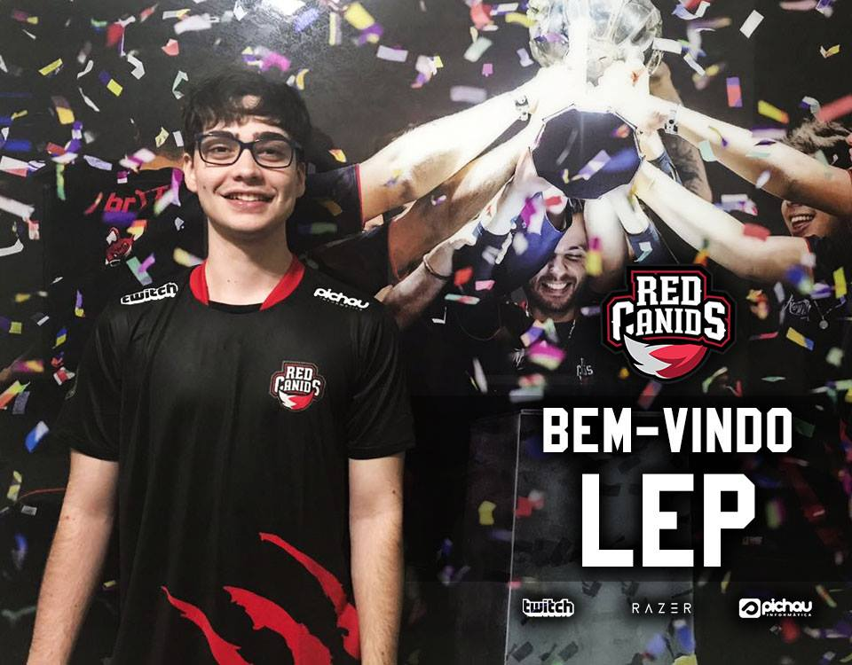

As tranferencias para o CBLOL 2018
RED
Red Canids contrada Lep da CNB
Red Canids anunciou no início da noite desta quarta-feira a contratação de Pedro "Lep" para a temporada 2018 do time de League of Legends. Ex-CNB e Kabum - onde disputou Mundial de LoL -, o topo chega à Matilha após assinar um contrato com dois anos de duração. Ele vai disputar posição com Leonardo "Robo" no time.
Felippe Corradini comunicou a imprensa que confia nas habilidades de Lep. "Trouxemos o Lep porque acreditamos muito no potencial que o jogador tem. Além de ser um dos jogadores mais conhecidos do cenário, a qualidade dele é inegável e depois de um split abaixo do que ele pode mostrar, tenho certeza que ele chega à Red Canids com muita vontade de se provar mais uma vez para todos - afirmou Felippe Corradini."
PAIN GAMING
Pain Gaming anuncia a chegada de Takechi e Tinowns
A Pain Gaming confirmou, nesta sexta-feira (20/10/2017), as contratações de Murilo "Takeshi" Alves e Thiago "Tinowns" Sartori. Com histórico de atuar no meio tanto na CNB quanto na Keyd, Takeshi está confirmado como o novo top laner da tradicional equipe do cenário de League of Legends nacional. Tinowns, contratado junto à CNB, será um dos meios do time junto com Gabriel "Kami" Bohm, jogador de maior renome da organização.
Paada: "Eu acho que o perfil que o Murilão tem e as características que ele traz caem como uma luva porque o cara é bom, é lider, pensa no grupo. Quem acompanha o histórico dele sabe que nunca se envolveu em polêmica, jogou em poucos times, sempre foi muito fiel e empenhado. Tudo isso é reflexo do quão bom profissional ele é. Isso é mais importante hoje do que um talento ou nome grande, ou uma estrela. Quem hoje preza por estrelismo é muito novo nos e-sports para achar que isso ganha campeonatos. Esse cara aqui traz o pacote completo. A decisão foi fácil, a adaptação foi excepcional"
Takechi:"Eu estou praticamente o mesmo tempo que o Kami (no cenário profissional), começamos lá em 2011, 2012. Em tanto tempo no cenário, joguei no CNB e na Keyd apenas. Precisava de uma mudança na minha carreira e surgiu essa oportunidade de vir para a Pain. Sempre ouvi falar muito bem da Pain e coloquei tudo isso na balança na hora de tomar a decisão. Confesso que, quando tive o proposta, foi uma surpresa, mas era hora de fazer uma mudança na minha carreira. Foi praticamente isso que me levou a aceitar entrar na Pain. Seria mais fácil jogar mid em outro time, mas no momento eu precisava de uma mudança drástica. Agora sou top laner da Pain"
CNB
CNB trâs o Rakin para sua lane Op
O mid laner Rafael “Rakin” Knittel está de casa nova. O agora ex-jogador da paiN Gaming foi contratado pelo CNB eSports Club e deverá ser anunciado nas próximas semanas. Rakin, que não atuou no 2º split do CBLoL 2017, mas que em várias ocasiões em suas streams afirmou que gostaria de voltar a competir no próximo ano, vem para substituir tinOwns que está próximo de assinar contrato com a paiN.
Revelado pela Call Gaming, em 2014, Rakin chegou na Pain em julho de 2016, após passagem pela Big Gods, rebaixada naquele ano. O meio chegou a substituir Gabriel “Kami” na primeira metade do CBLoL, mas durante a segunda parte da competição se dedicou apenas às transmissões ao vivo.
INTZ
No dia 10 de Outubro de 2017 a organização anuncia a saida dos dois jogadores da Bot Lane.
Depois de serem parte de ums das melhores equipes, se não a melhor do CBLOL e conquitarem de 3 CBLOLs e 1 IWCQ. Micael "micaO" e Luan "Jockster" saem da INTZ, agradecendo a organização e querendo experiencia em outra equipe:
Jockster: "Você estando nesse cenário e jogando em um time por muito tempo, você sente que fica um pouco estagnado e seria bom ter experiências em outros lugares. O time pode mudar, mas no fim, ainda é a INTZ. Eu sinto que era inevitável que isso acontecesse"
Micao: "Gostaria de agradecer a todo mundo que apoiou, sofreu e teve felicidade junto com a gente. Foi uma história com muita tristeza e muita alegria, mas passamos isso juntos. É algo que será lembrado para sempre"